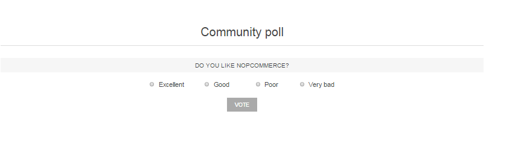

Polls
Polls functionality in nopCommerce allows you to make your e-commerce site more interactive. There are many ways you can use polls for an e-commerce site. One popular way is to use them as a short customer satisfaction survey. People like being asked for feedback, and this is a good opportunity to see how you are doing as an online merchant.
The poll on the home page of the Default Clean nopCommerce theme looks like: 
To view all the polls and add new ones, go to Content management → Polls.
To search for polls that were used in a certain store, select the store name from the list.
Adding polls
To add a new poll, click the Add new button in the top right.
Poll info
Define the following details for the new poll:
If more than one language is enabled, from the Language dropdown list, select the language of this poll. Customers will only see polls in their selected language.
Enter the descriptive Name of this poll. This is the text the customers will see. For example, "What do you think about our store?"
Select the Published checkbox to make this poll active.
Select the Show polls on home page checkbox if you want to show the poll on the home page.
Select the Allow guests to vote checkbox to enable nonregistered users to vote in the poll.
Enter the Start date and End date in Coordinated Universal Time (UTC).
Note
You can leave these fields empty if you do not want to define the poll's start and end dates.
Choose the stores in the Limited to stores field to enable this poll for specific stores only. Leave the field empty in case this functionality is not required.
Note
In order to use this functionality, you have to disable the following setting: Catalog settings → Ignore "limit per store" rules (sitewide). Read more about multi-store functionality here.
- In the System keyword field, you can specify where the poll will be displayed. For example, LeftColumnPoll.
- Enter the Display order of the poll. A value of 1 represents the top of the list.
Click Save and continue edit to proceed to the Poll answers panel.
Poll answers
Fill in the following poll answer info:
- The Name that will be displayed to a customer.
- The Display order. A value of 1 represents the top of the list.
Then click the Add new record button to save the answer.
The complete list of answers can look as follows:
You can then Edit records and Delete them if required.